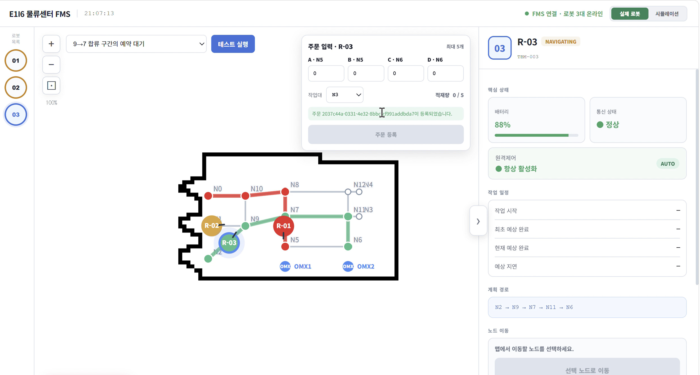
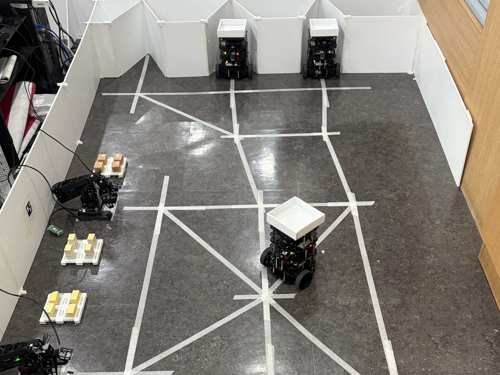

Communication & Backend
- Zenoh Router 및 ROS2DDS Bridge로 로봇별 통신 구성
- Namespace, 로컬 DDS, Allow 필터로 통신 범위 분리
- ROS 2 Topic, Action 및 상태 정보 연동
01 - MULTI-ROBOT - FMS
주문부터 Pickup, Workstation까지
AMR과 OMX 작업을 연결하는 물류 관제 시스템
WHAT I DID
PROJECT IMAGES

맵에서 로봇의 위치와 상태를 확인하는 관제 화면

이동 로봇 3대의 통신과 경로 주행을 시험한 작업 공간
SYSTEM FLOW
작업 요청
FastAPI와 ROS 2 연동
로봇별 통신
경로 주행과 Pickup
정렬 후 MQTT 작업
PROBLEM SOLVING
Nav2 주행 중 LiDAR Scan 지연으로 센서 처리 경고가 발생했습니다.
Main PC와 로봇의 시간 차이를 분석하고, LiDAR 수신 상태를 확인해 source timeout을 조정했습니다.
설정 변경 후 실장비의 센서 수신과 Nav2 주행 로그를 다시 확인했습니다.